User interface language
We describe the user interface of Contensis in different areas of the business. This guide aims to bring some consistency to how we refer to different elements of the product.
Dashboard
The dashboard is the screen that is displayed when a user first logs in to Contensis. Its built up of 6 widgets.
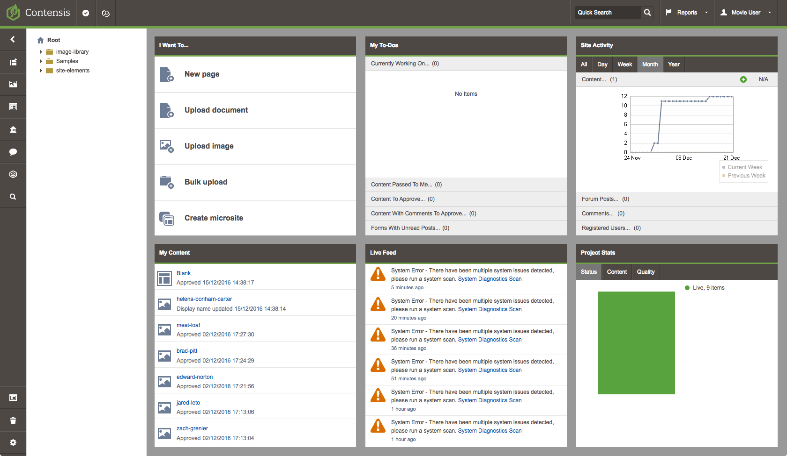
Top toolbar
Sidebar
The sidebar is used as a way to give users a means of navigating Contensis in a clear and compact way. It lives on the left side of the screen.
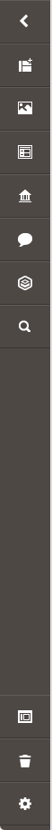
Drawer
A drawer is a component that can slide in from the left or the right of a screen revealing additional options or properties. The drawer is most commonly used with the sidebar to provide secondary navigation.
Content types and entries
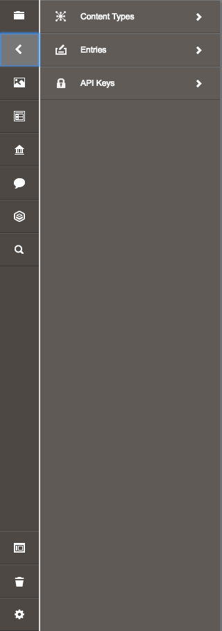
Projects
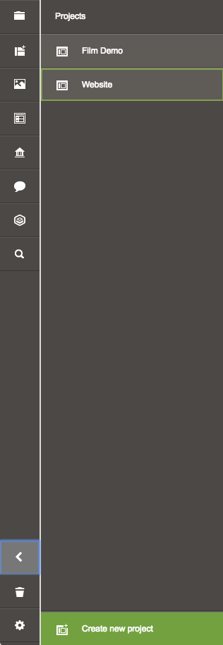
Widget
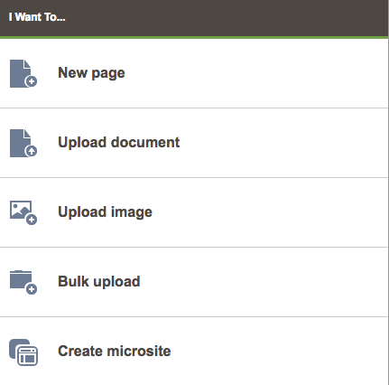
Project explorer
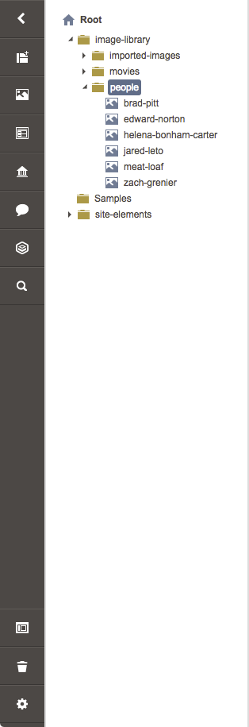
Previous names
For consistency sake we don't use the following terms.
- Treeview
- Tree
- Navigator
- Navigator tree
Listing
A listing provides a way to display large volumes of content in a screen. We use two common types although there are three versions in use today.
Basic listing
A basic listing is usually used when there are 100 items or less and does not require pagination.
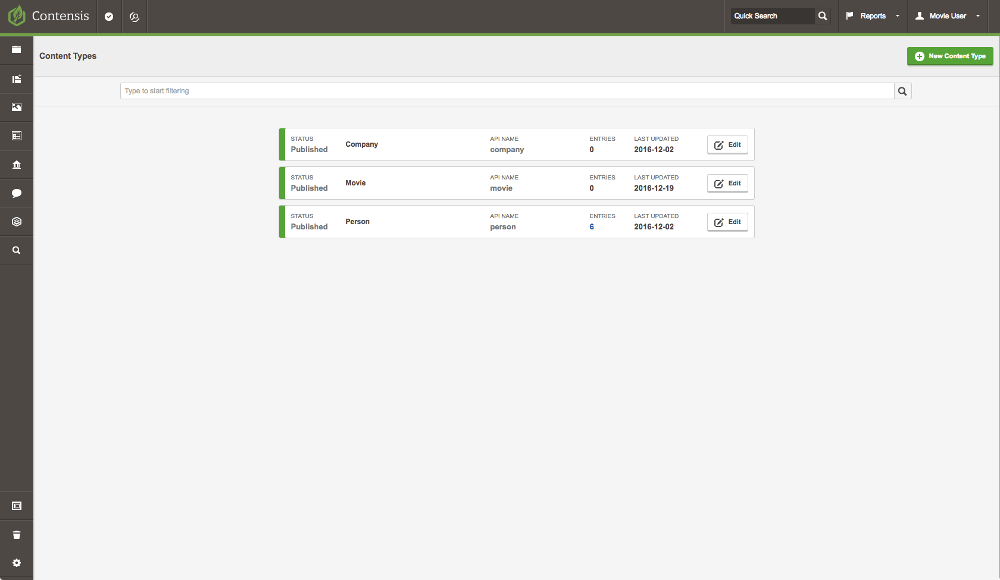
Table listing
A table listing is usually used when there are over 100 items, requires pagination and more detailed information needs to be displayed against each item.
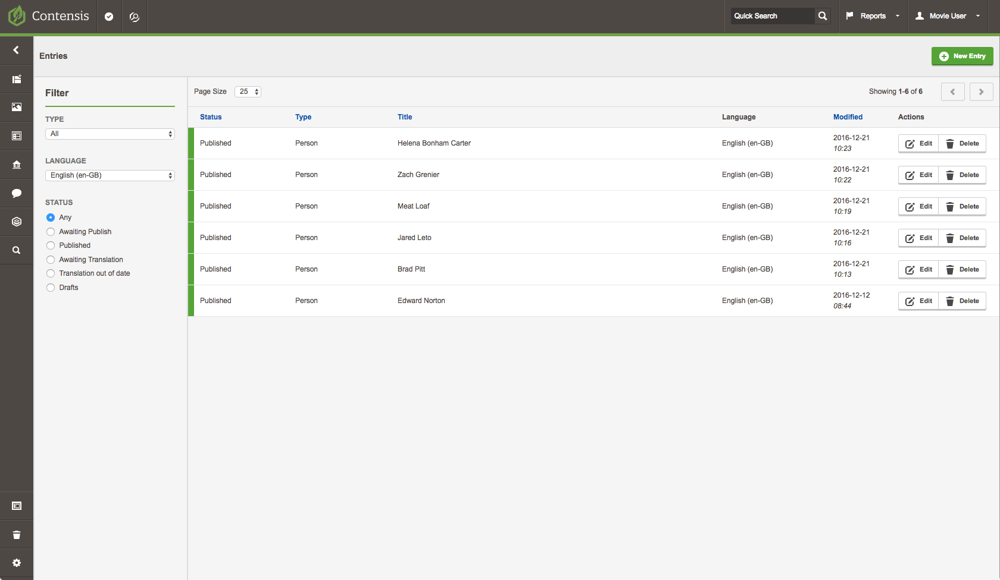
Grid
A grid is widely used in Contensis and is most commonly seen in the management console. It's slowly being replaced with basic and table listings. It provides a similar pattern to the table listing.
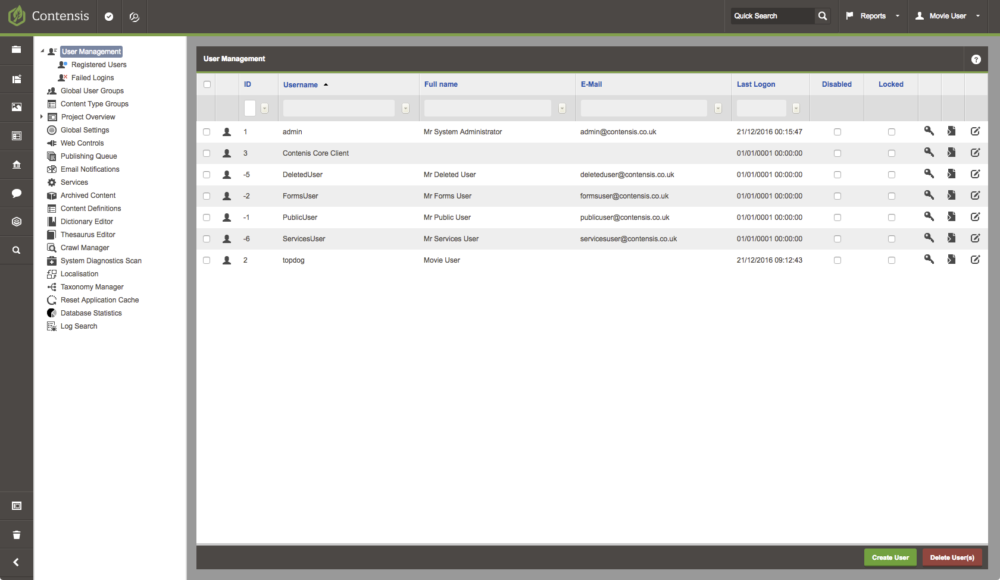
Content type builder

Panel

Toolbox
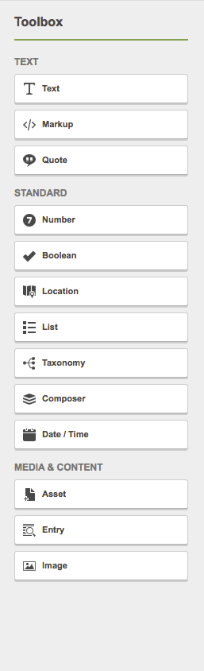
Entry editor
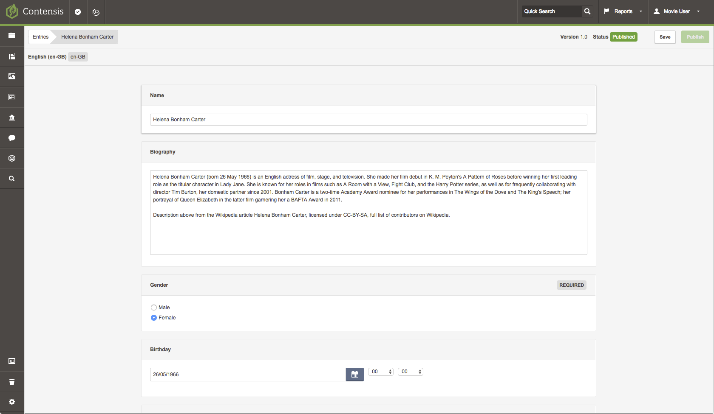
WYSIWYG editor

Source editor
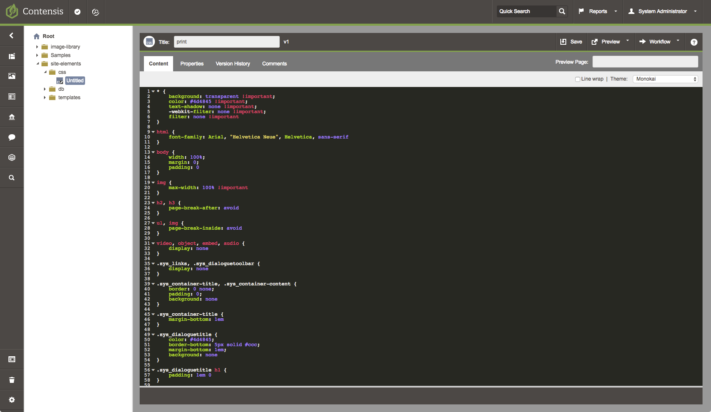
Previous names
This component has had many names, for consistency sake we don't use the following terms to describe the source editor.
- HTML editor
- Code Mirror
- code editor
Management console
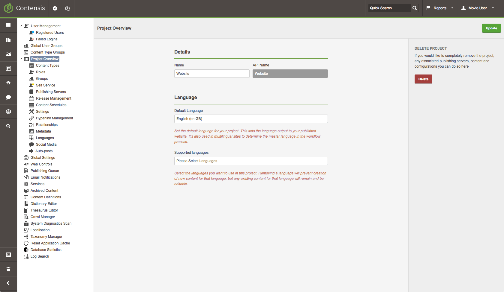
Modals
Modals are used to get a response from a user, to reveal critical information that cannot be ignored, or to show data without losing the overall context of a page. Interactions on the main page must wait for the modal to close.
Basic
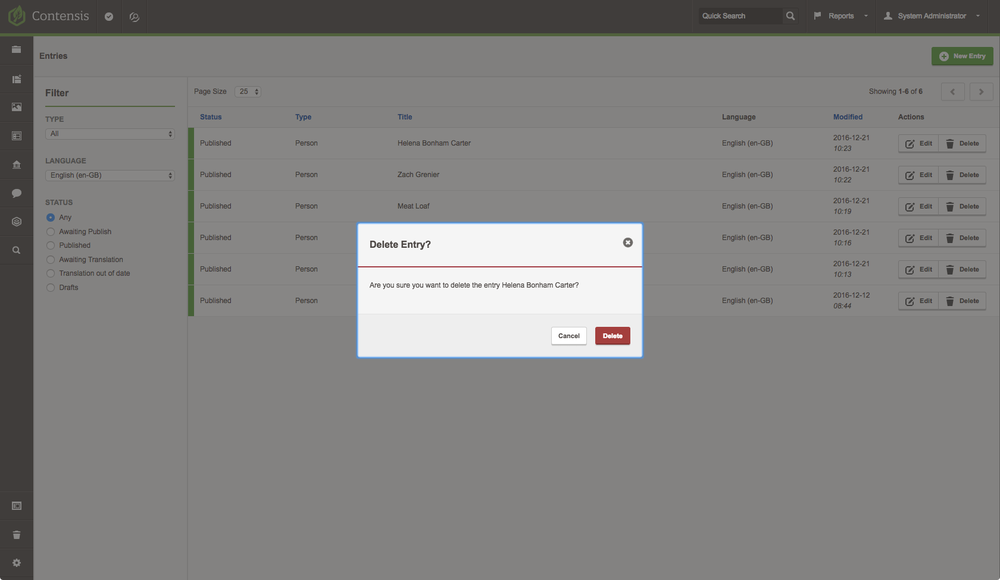
Usage
- Delete an entry
- Remove a field from a content type
- Navigating away from an entry without saving
Confirmation
A confirmation modal requires a user to insert a specific text string before the action can be confirmed.
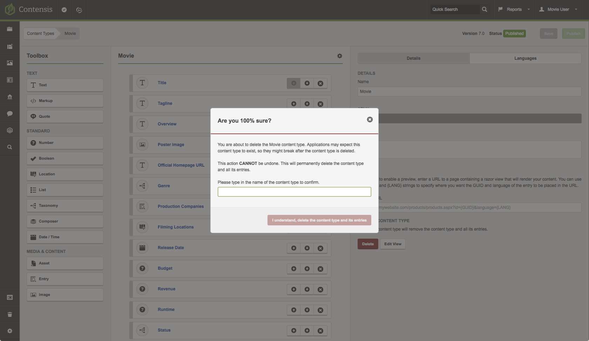
Usage
- Delete a content type
- Delete a project
Popup window
A 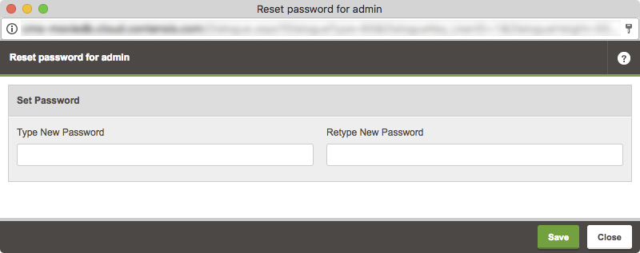